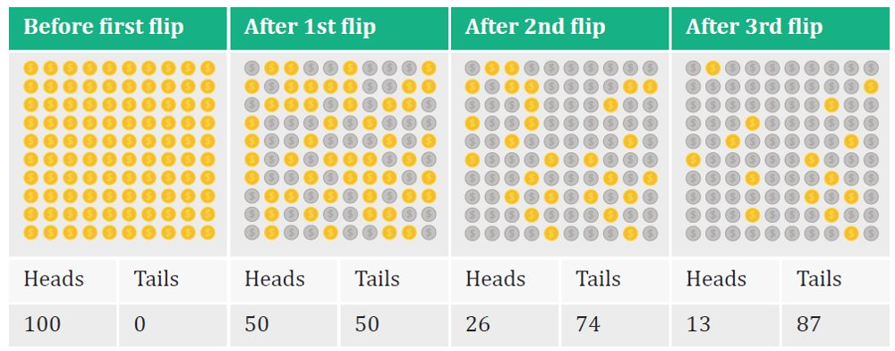
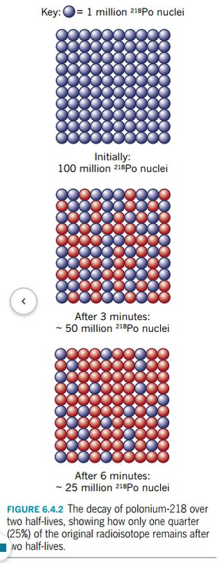
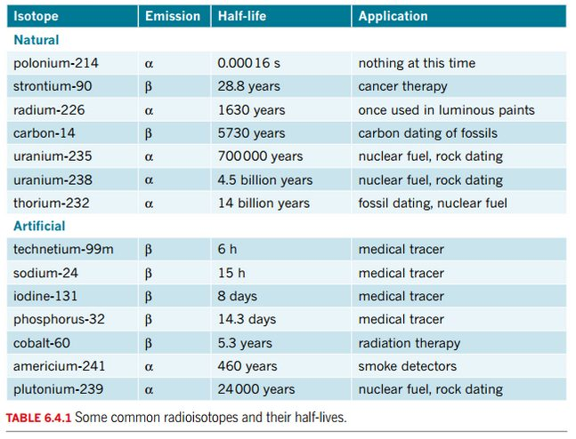
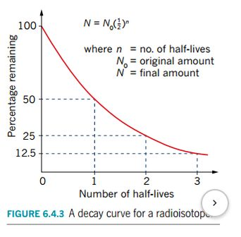

Half-life and activity
Different isotopes decay at different rates. They can be compared using the idea of half-life.
Imagine flipping a set of 100 coins, all showing heads. When a coin "decays", it turns to tails.
- The first flip produces about 50 tails. These coins have decayed and stay as tails.
- The second flip only applies to the remaining 50, and produces around 25 more tails.
- This process continues, halving each time.

A very rapid decay is polonium-218, with a half-life of 3 minutes:
| Time (min) | Number of atoms |
|---|---|
| 0 | 100 million |
| 3 | 50 million |
| 6 | 25 million |
| 9 | 12.5 million |
A very slow decay is uranium-235, with a half-life of 704 million years.


The decay formula
- N is the number of nuclei (or mass) remaining
- N0 is the initial number of nuclei
- t is the time elapsed and t½ is the half-life, so n is the number of half-lives.
After every half-life, the amount is half what it was. When graphed, this forms a decay curve that gets closer and closer to zero.

The half-life of technetium-99 is 6 hours. If there is initially 100 g of a sample, how much will remain after 18 hours?
18 ÷ 6 = 3 half-lives. 100 g → 50 g → 25 g → 12.5 g.
The half-life of polonium-210 is 3 minutes (as given in the booklet). If 20 g remains after 12 minutes, how much was there in the sample initially?
12 ÷ 3 = 4 half-lives. Work backwards, doubling 4 times: 20 g → 40 g → 80 g → 160 g → 320 g.
Experiment: Half-life simulation
Aim: to investigate the principle of half-life using dice to simulate the radioactive decay of atoms.
Equipment: a tray of fifty dice
Procedure:
- Roll out the fifty dice on the table, making sure they are thoroughly mixed first (i.e. not all showing the same number).
- A "6" means that atom has undergone nuclear decay. Remove all dice showing a 6.
- Record the number of dice remaining.
- Roll the remaining dice and repeat steps 2–3 until fewer than 2 dice remain (or 15 rolls).
- Complete the results table (class data will be collected and shown on the board).
| Rolls | Your group: atoms remaining | Your group: % remaining | Class total: atoms remaining | Class total: % remaining |
|---|---|---|---|---|
| 0 | 50 | 100 | 100 | |
| 1 | ||||
| 2 | ||||
| 3 | ||||
| … up to 15 |
Plot a graph of the percentage of atoms remaining (y-axis) against the number of rolls (x-axis) on graph paper. Plot the class data and your group's data on the same axes.
Use the graphical method shown in class to estimate the "half-life" of the dice.
Draw a horizontal line from 50% on the y-axis to the curve, then a vertical line down to the x-axis and read off the number of rolls. Each die has a 1 in 6 chance of "decaying" each roll, so the half-life should be about 3.8 rolls (roughly 4 rolls). Checking from 50% to 25% should give about the same number of rolls again.
Compare your group's results with the class results. Which is more reliable, and why?
The class results are more reliable. Radioactive decay is random, so a small sample (50 dice) has a lot of random variation. Combining the whole class gives a much larger sample, which reduces the effect of random variation and produces a smoother curve that is closer to the true half-life.
Use a calculation or your graph (explain your method) to estimate how many rolls you would need to take 1000 dice down to:
- 250
- 125
- 50
Using a half-life of about 3.8 rolls:
- 1000 → 500 → 250 is 2 half-lives, so about 2 × 3.8 ≈ 7.6 rolls (about 8).
- 250 → 125 is one more, 3 half-lives, so about 3 × 3.8 ≈ 11.4 rolls (about 11).
- 50 is 1/20 of 1000. 24 = 16 and 25 = 32, so it is between 4 and 5 half-lives, about 4.3 half-lives ≈ 16 rolls. (Using the equation: 50 = 1000 × (5/6)n gives n ≈ 16.4 rolls.)